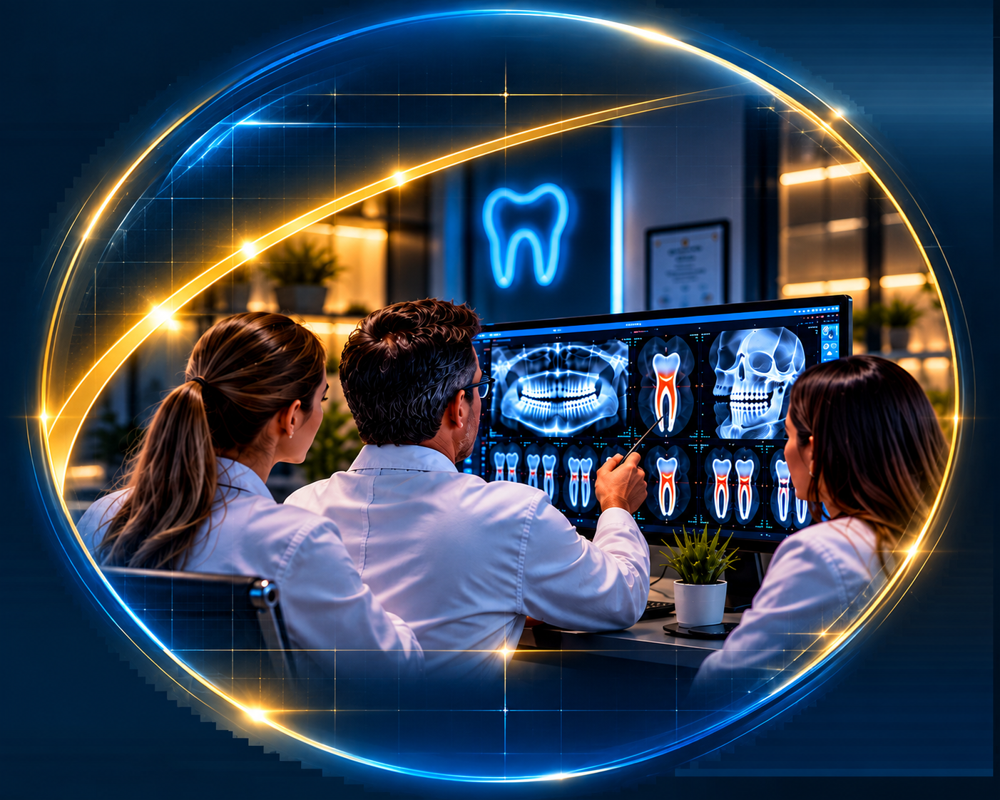

A EQUIPE
A Radiologia Odontológica e Imaginologia reúne conhecimentos essenciais para a interpretação de radiografias e tomografias odontológicas. Na Premium Laudos, o trabalho de análise de exames busca oferecer laudos claros, com atenção às estruturas anatômicas e aos achados relevantes para o cirurgião-dentista. A atuação profissional e os registros dos responsáveis técnicos devem ser consultados pelos canais oficiais de atendimento.
